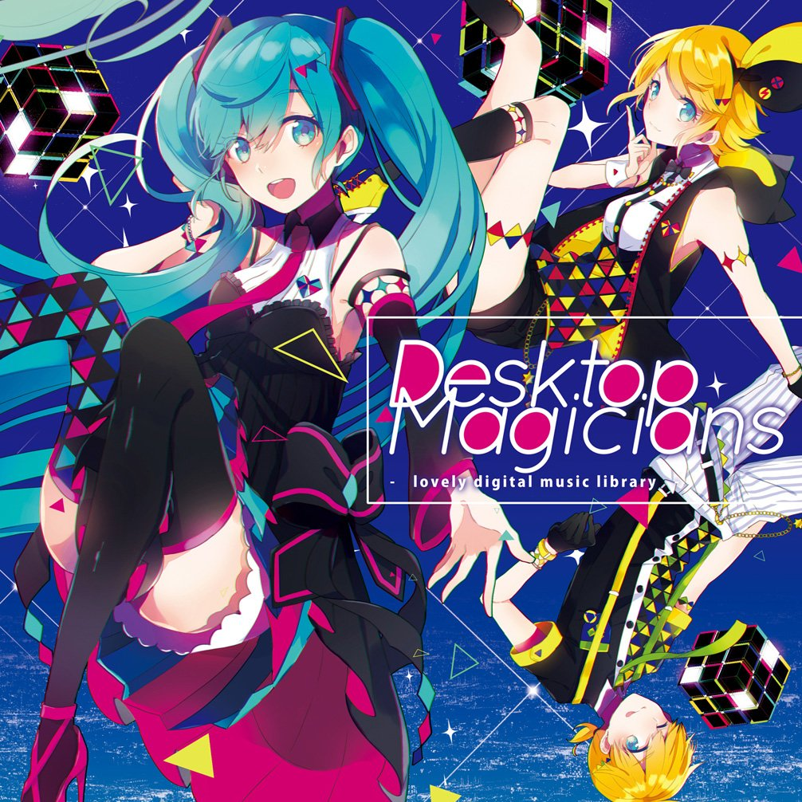
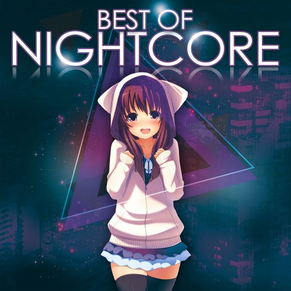

Vocaloid
Ellos son los primeros idols virtuales, famosos a niven mundial. Con mas de 5,000,000 de canciones y mas de 60,000,000 de fans. Los primeros en hacer un concierto en vivo de hologramas con personajes completamente ficticios. Los primeros idols que tu puedes manejar con un simple programa de computadora (MMD). Los primeros idols que cantan tus canciones. Los primeros idols que pueden hacer que tus canciones se escuchen en sus conciertos. Mis compañeros me preguntan "¿por que te gusta esa basura irreal?" y yo les respondo "por que ellos me demostraron que si de musica se trata, no hay limistes para expresarla" :3
Nightcore
Es una edición nocturna es una pista de portada que acelera el tono y el tiempo de su material de origen en un 10-30%. El nombre se deriva de Nightcore, un dúo noruego que lanzó versiones de canciones de trance y eurodance con cambios de tono, pero ahora se refiere más ampliamente a cualquier versión acelerada. A mi me gusta este genero por que es una version difernte de canciones famosas, una version original creada por personas creativas!!!